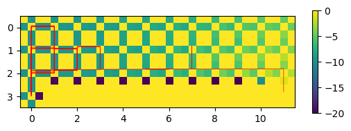

Appendix: Gymnasium#
Gymnasium is a collection of environments for testing reinforcement learning algorithms.
It was initially developed by OpenAI, but as the company shifted its focus to large language models, it was left stranded. Now it is maintained by the Farama Foundation.
https://gymnasium.farama.org/
Farama-Foundation/Gymnasium
Gymnasium can be installed by pip or conda. We also use pygame for simple 2D rendering.
pip install gymnasium pygame
import numpy as np
import matplotlib.pyplot as plt
%matplotlib inline
import gymnasium as gym
CliffWalking#
Let us try the CliffWalking environment introduced in Barto & Sutton textbook>
# Create a new enviornment
env = gym.make("CliffWalking-v0", render_mode="human") # with animation
# check the observation/action spaces
print(env.spec)
print("observations:", env.observation_space.n) # 4x12
print("actions:", env.action_space.n) # 0=up; 1=right; 2=down; 3=left
# Reset the environment state
obs, info = env.reset()
print("observation:", obs)
EnvSpec(id='CliffWalking-v0', entry_point='gymnasium.envs.toy_text.cliffwalking:CliffWalkingEnv', reward_threshold=None, nondeterministic=False, max_episode_steps=None, order_enforce=True, disable_env_checker=False, kwargs={'render_mode': 'human'}, namespace=None, name='CliffWalking', version=0, additional_wrappers=(), vector_entry_point=None)
observations: 48
actions: 4
observation: 36
# Episode with random actions
T = 20
sar = np.zeros((T+1,3)) # state, action, reward
sar[0,0] = obs
for t in range(T):
# Choose a random action
action = env.action_space.sample()
# Environment dynamics
obs, reward, term, trunc, info = env.step(action)
sar[t,1:] = [action, reward]; sar[t+1,0] = obs
if term or trunc: # terminal stete or timeout
break
plt.plot(sar[:,0]%12); plt.plot(3-(sar[:,0]//12)) # x, y
plt.plot(sar[:-1,1], "o") # action
plt.plot(np.maximum(sar[:-1,2],-5)) # reward
plt.legend(['x','y','a','r']);
# Dispose the environment
env.close()
Q-learning and SARSA#
Let us test Q-learning and SARSA agents.
class RL:
"""Reinforcement learning with gymnasium environment"""
def __init__(self, environment, agent):
"""After environment=gym.make()"""
self.env = environment
self.Ns = environment.observation_space.n
self.Na = environment.action_space.n
self.agent = agent(self.Ns, self.Na)
def episode(self, tmax=50):
"""One episode"""
# Reset state
state, info = self.env.reset()
reward = None
# Record of state, action, reward
sar = np.zeros((tmax+1, 3))
sar[0,0] = state
# Repeat interactoin
for t in range(0, tmax):
# take an action and learn
action = self.agent.step(state, reward)
# environmental dynamics
state, reward, term, trunc, info = self.env.step(action)
sar[t,1:] = [action, reward]
sar[t+1,0] = state # new state
if term or trunc:
# learn from terminal reward
self.agent.step(state, reward)
break
self.sar = sar[:t+2]
return self.sar
def run(self, nrun=10, tmax=50):
"""Multiple runs of episodes"""
Return = np.zeros(nrun)
for n in range(nrun):
r = self.episode(tmax)[:,-1] # reward sequence
Return[n] = sum(r)
return Return
class QAgent():
"""Class for a Q-learning/SARSA agent"""
def __init__(self, nstate, naction):
self.Ns = nstate # number of states
self.Na = naction # number of actions
# allocate Q table
self.Q = np.zeros((nstate, naction))
# default parameters
self.alpha = 0.1 # learning rate
self.beta = 1.0 # inverse temperature
self.gamma = 0.9 # discount factor
self.onpolicy = False # Q-learning
def boltzmann(self, q):
"""Boltzmann selection"""
pr = np.exp( self.beta*q) # unnormalized probability
pr = pr/sum(pr) # probability
return np.random.choice(len(pr), p=pr)
def step(self, state, reward=None):
"""learn by reward and take an action"""
# Boltzmann action selection
action = self.boltzmann( self.Q[state,:])
if reward != None:
# TD error: self.state/action retains the previous ones
Qnew = self.Q[state,action] if self.onpolicy else max(self.Q[state,:])
delta = reward + self.gamma*Qnew - self.Q[self.state,self.action]
# Update the value for previous state and action
self.Q[self.state,self.action] += self.alpha*delta
# Boltzmann action selection
self.action = self.boltzmann( self.Q[state,:])
# remember the state
self.state = state
self.action = action
return self.action
# CliffWalking environment and Q-learning agent
env = gym.make('CliffWalking-v0', render_mode='rgb_array')
cwql = RL(env, QAgent)
# run an episode
sar = cwql.episode(100)
plt.plot(sar[:,0]%12); plt.plot(3-(sar[:,0]//12)) # x, y
plt.plot(sar[:-1,1], 'o') # action
plt.plot(np.maximum(sar[:-1,2],-5)) # reward
plt.legend(['x','y','a','r']);
def Qmap(Q, w, h, a=(0,1,2,3)):
"""2D map of action values
action index:(N,E,S,W)"""
Q4 = np.zeros((h,w,3,3)) # 4D array
Q4[:,:,0,1] = Q[:,a[0]].reshape((h,w)) # N
Q4[:,:,1,2] = Q[:,a[1]].reshape((h,w)) # E
Q4[:,:,2,1] = Q[:,a[2]].reshape((h,w)) # S
Q4[:,:,1,0] = Q[:,a[3]].reshape((h,w)) # W
Q2 = np.transpose(Q4, (0,2,1,3))
plt.imshow(Q2.reshape((h*3, w*3)), extent=(-.5,w-.5,h-.5,-.5))
plt.colorbar(shrink=0.4);
def track(s, w):
"""show the state track in 2D"""
x = s%w; y = s//w
plt.plot(x, y-np.linspace(0,0.2,len(y)), lw=0.5, c='r') # gradually shift up
Qmap(cwql.agent.Q, 12, 4)
track(cwql.sar[:,0], 12)
# repeat
R = cwql.run(nrun=1000, tmax=100)
plt.plot(R);
plt.xlabel('episode'); plt.ylabel('return');
Qmap(cwql.agent.Q, 12, 4)
track(cwql.sar[:,0], 12)
# CliffWalking environment and SARSA agent
env = gym.make('CliffWalking-v0', render_mode='rgb_array')
cwsa = RL(env, QAgent)
cwsa.agent.onpolicy = True
# repeat
R = cwsa.run(nrun=1000, tmax=100)
plt.plot(R);
plt.xlabel('episode'); plt.ylabel('return');
Qmap(cwsa.agent.Q, 12, 4)
track(cwsa.sar[:,0], 12)

Stable baseline#
A goodness of Gymnasium is that there are many RL algorithms tested and shared by the community. There are several well curated collectioin sites, such as